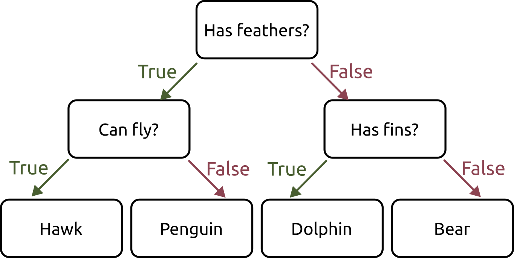
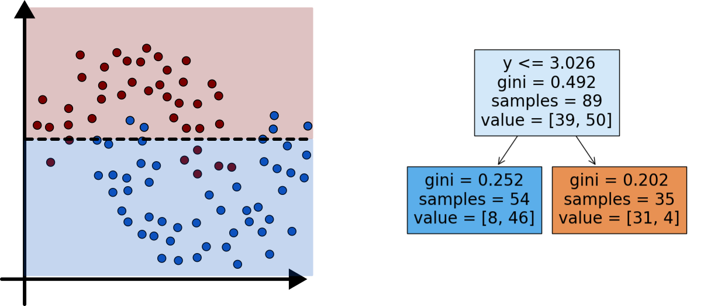
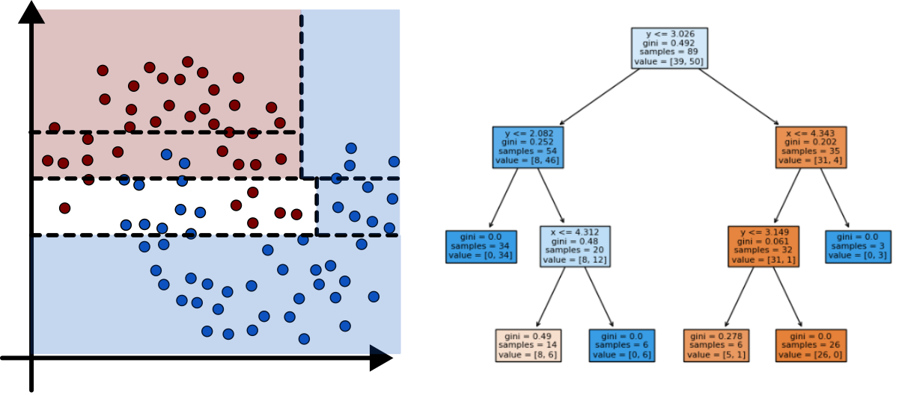

Such Pretty Trees
Jed Rembold
March 14, 2024
Announcements
- Homework 4!
- Keep in mind that some folks might be leaving early next week, so plan with your partner accordingly
- A second check-in this weekend–don’t forget!
- I don’t think anyone is in this position, but if you are considering withdrawing for whatever reason, the deadline is Tuesday
Recap
- Split data into training and testing sets before fitting to have something to compare against
- Logistic (and Multinomial) Regression labels categories by determining lines/planes/hyperplanes to separate groups
- The general flow of supervised classification learning looks like:
- Split your data
- Choose your model and initialize it
- Fit the model to your training data
- Use the fitted model to predict labels for your testing data
- Evaluate how the model did: confusion matrix
Discussing Today
- Understanding model results
- Category probabilities
- Visualizing decision boundaries (when reasonable)
- Practice time!
- Introducing model #2: Decision Trees
Understanding Probabilities
Classification models usually internally assign a probability to a point as to what label it should have
- The dominant probability is what wins, and that label gets assigned
It can be useful sometimes to see the predicted probabilities for each point, rather than the final category
model_fit.predict_proba(test_df[[feature_cols])predict(model_fit, test_df, type='prob')You might need to get creative about how to visualize these, depending on the number of categories
Decision Boundaries
- It can be a useful aid to visualize where the decision boundaries lie
- This is not quite as simple as extracting the lines that bisect each region, since the decision regions will involve the areas of most confidence in a particular classification
- Really only reasonable for data with 2 independent variables or features

Decision Boundary (Python)
Need to import:
from sklearn.inspection import DecisionBoundaryDisplay as DBDCreate the plot from the estimator:
DBD.from_estimator(model, df[[features]])- Unlike the confusion matrix, here the estimator needs both the model and the feature values to predict from
- Can also pass in other arguments, like axis labels or the matplotlib axis you want to add the plot to
Decision Boundary (R)
Tidymodels doesn’t really have a comparable function to DecisionBoundaryDisplay, but it can be computed directly with other tools
Main idea is to compute a fine grid of points in feature-space that you’ll use to get predictions
pred_df <- expand.grid( feat1 = seq(low, high, length.out=1000), feat2 = seq(low, high, length.out=1000))Then get predictions from your model
pred_cat <- model_fit %>% predict(pred_df)Plot the results with a raster plot with the fill determined by the predicted label
ggplot(pred_df, aes(feat1, feat2, fill=.pred_class)) + geom_raster(alpha = 0.5)
Activity!
- The dataset here has two independent variables and then a label column that can be one of three options
- Fit a Logistic Multinomial Regression model to the data and compute the resulting confusion matrix and model accuracy
- If time, plot the decision boundaries
Why other models?
- We are going to look at some alternative classification models, but why?
- Logistic Regression is not going to classify non-linear relationships well
- Different strengths with respect to preprocessing or feature distribution
A Decision Tree

Planting Trees 1

Planting Trees 2

Planting Trees 3

Minimizing Impurity
- Two common methods used to evaluate impurity
- Gini Index: \[ H_{gini} = \sum_{k\in y} p_{mk}(1-p_{mk}) \]
- Cross-Entropy: \[ H_{CE} = - \sum_{k\in y} p_{mk}\log(p_{mk}) \]
- In both:
- \(y\) are all the different classes
- \(p_mk\) is the distribution or proportion of points that are of class \(k\) in node \(m\)
Creating Decision Trees (Python)
Import the classifier:
from sklearn.tree import DecisionTreeClassifierCreate your model:
tree = DecisionTreeClassifier()We will mention available options in just a moment, as they can be more important here
Everything else works the same as the logistic regression models!
Creating Decision Trees (R)
You already have the model as part of the parsnip library
Create your model:
tree <- decision_tree(mode="classification")Everything else works the same as the logistic regression models!
Visualizing Decision Trees (Python)
Can also import a plotter for Matplotlib to sketch out nice trees
from sklearn.tree import plot_treeThen just pass the tree model after fitting it
plot_tree(tree)Can adjust the
filledoption to color the nodes, orfeature_namesto show better comparisons
Visualizing Decision Trees (R)
You need another package to plot the decision trees nicely
library(rpart.plot)Then just pass the tree model after fitting it
rpart.plot(tree_fit$fit)Can adjust the
typeandextrato different numbers to further customize
Parameter Tuning
- Decision Tree classifiers have several parameters that can be tuned to adjust the proportions of the tree
- Often called pruning, and falls into either
pre-pruning or post-pruning categories
Pre-pruning limits the tree’s size as it is build (pick one, maybe two)
- Python
max_depthmax_leaf_nodesmin_samples_splitmin_impurity_decrease
- R
tree_depthmin_n
- Python
Post-Pruning
- Post-pruning takes the full tree and then proceeds to “snip” off branches that don’t have much happening
- Most common approach is likely cost complexity pruning
\[ R_\alpha(T) = R(T) + \alpha |T| \]
- Where
- \(R(T)\) is the total leaf impurity
- \(|T|\) is the number of leaf nodes
- \(\alpha\) is a free parameter that is chosen
- Where
- In Python: indicate with
ccp_alphawhen creating the tree - In R: indicate with
cost_complexitywhen creating the tree
Instability
- A drawback of decision trees is that they are inherently unstable
- The tree you get will depend heavily on the randomized training and test sets
- They might do a similarly good job of prediction, but they can look wildly different
- The
random_stateoption (or setting a seed) in examples have been fixing this so far. But remove that and run the same trial multiple times
Feature Importance
It can be useful to get an idea of what features are most important in constructing the tree
Once the model has been fit, you can query the model to get this information:
tree.feature_importances_This returns a list of relative importance for each feature, in the same order as the features you passed into the model originally
In R you need the
viplibrarylibrary(vip) vip(tree_fit)
Activity
- Taking the same dataset from Monday (here!) build a classifier using a decision tree
- For several different forms of pruning, create a tree and then compare its confusion matrix to the others